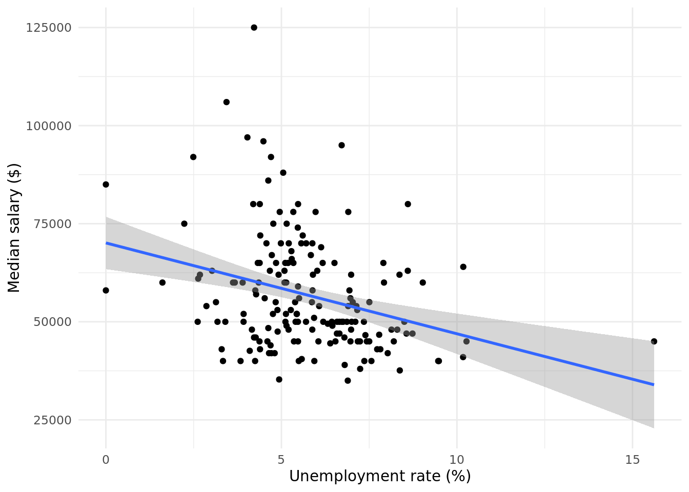
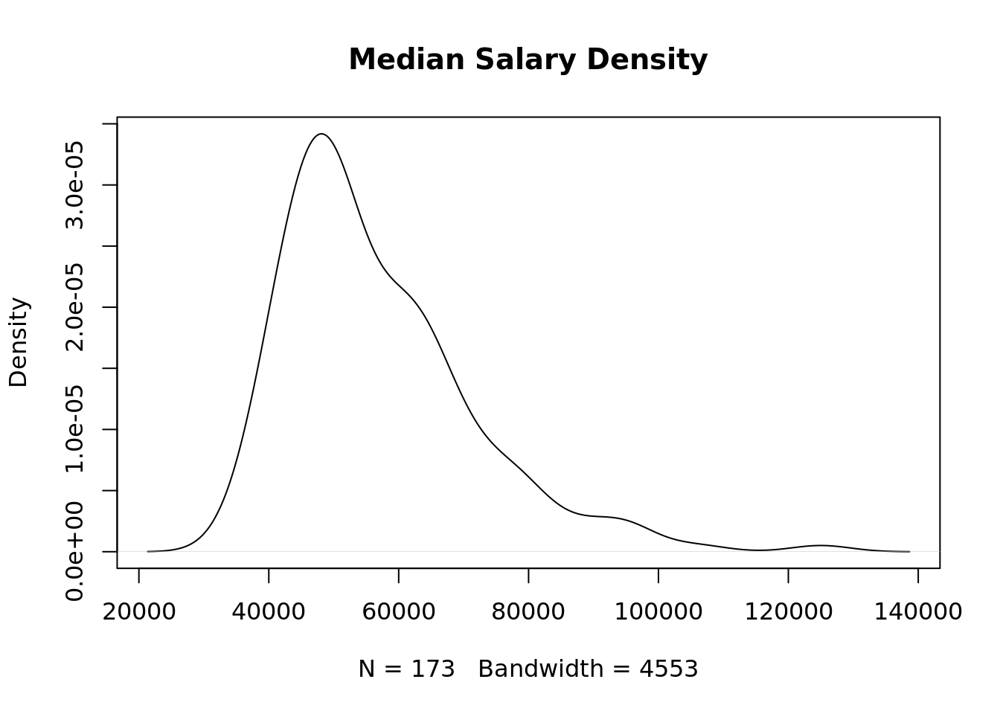
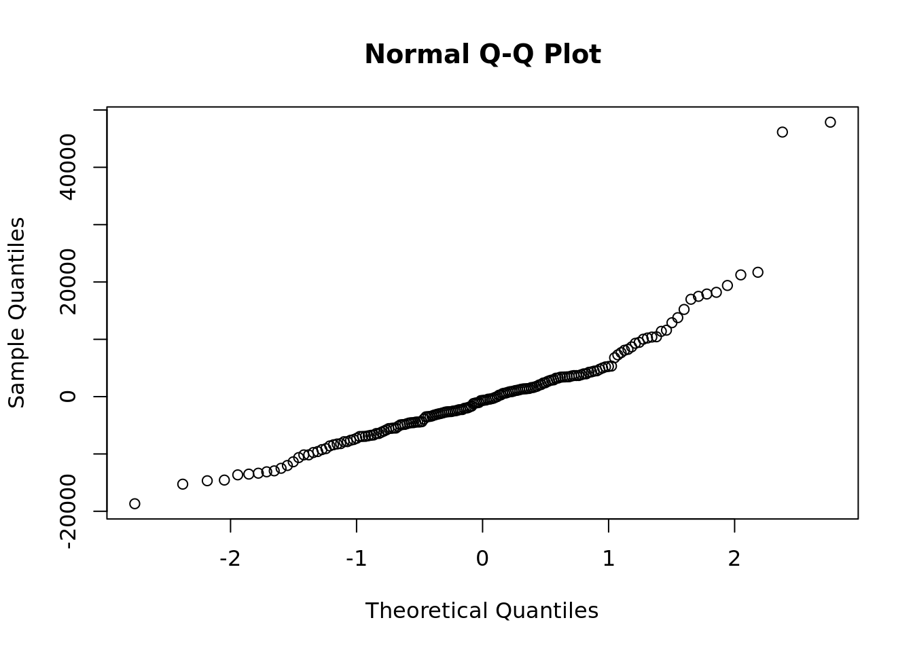
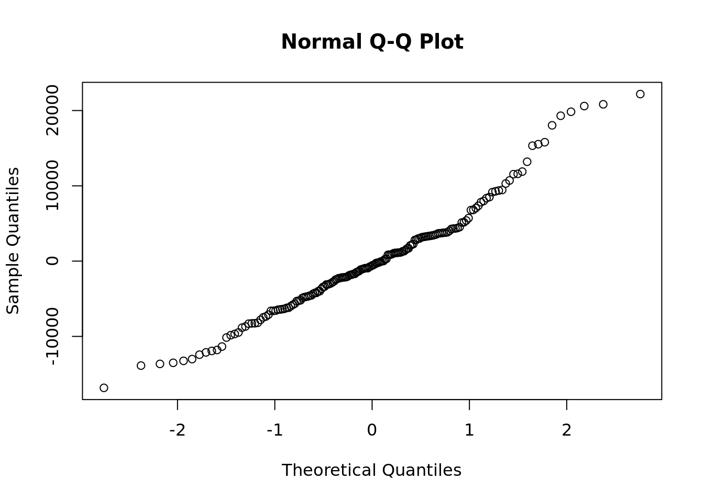

# Download the graduates dataset from the URL provided
url <- "https://peopleanalytics-regression-book.org/data/graduates.csv"
graduates <- read.csv(url)2B - Linear Regression Solutions
In this document we will conduct linear regression modeling on a data set relating to graduate salaries in the United States, to try to understand economic factors which influence graduate salaries.
Exercise 1 - Running a simple linear regression model
# view the first few rows in the data set to acquaint yourself with the data
head(graduates) Major Discipline Total
1 GENERAL AGRICULTURE Agriculture & Natural Resources 128148
2 AGRICULTURE PRODUCTION AND MANAGEMENT Agriculture & Natural Resources 95326
3 AGRICULTURAL ECONOMICS Agriculture & Natural Resources 33955
4 ANIMAL SCIENCES Agriculture & Natural Resources 103549
5 FOOD SCIENCE Agriculture & Natural Resources 24280
6 PLANT SCIENCE AND AGRONOMY Agriculture & Natural Resources 79409
Unemployment_rate Median_salary
1 0.02614711 50000
2 0.02863606 54000
3 0.03024832 63000
4 0.04267890 46000
5 0.04918845 62000
6 0.03179089 50000# Determine how many observations we have in this data set
nrow(graduates)[1] 173# use the colnames() function to get the names of the columns in the data set
colnames(graduates)[1] "Major" "Discipline" "Total"
[4] "Unemployment_rate" "Median_salary" # Use the cor() function to determine the correlation between unemployment rate and median salary
cor(graduates$Unemployment_rate, graduates$Median_salary)[1] -0.3019457# Consider the scale of the Unemployment_rate column.
# Transform it into a more useful scale
# (Hint: we will want to understand the impact of a percentage point change)
graduates$Unemployment_rate <- 100*graduates$Unemployment_rate# Run a simple linear regression model to estimate the influence of unemployment rate
# on graduate salaries, saving your model using a name of your choice
model <- lm(data = graduates, formula = Median_salary ~ Unemployment_rate)Exercise 2 - Interpreting the coefficients
# Examine the coefficients of your saved model
model$coefficients (Intercept) Unemployment_rate
70096.911 -2315.512 # Determine the 95% confidence interval for the coefficients
confint(model) 2.5 % 97.5 %
(Intercept) 63424.936 76768.887
Unemployment_rate -3419.067 -1211.958Write below an interpretation of these coefficients using the estimates and the confidence intervals which you just calculated.
- Unemployment rate has a statistically significant influence on median graduate salary
- Full employment is associated with a median salary of between $63425 and $76769 on average
- An additional percentage point in unemployment rate is associated with a reduction in median salary of between $1212 and $3419 on average
# EXTENSION: If you are familiar with using ggplot2, create a plot of unemployment rate and
# median salary and show the estimated linear model using geom_smooth()
library(ggplot2)
ggplot(data = graduates, aes(x = Unemployment_rate, y = Median_salary)) +
geom_point() +
geom_smooth(method = "lm") +
labs(x = "Unemployment rate (%)",
y = "Median salary ($)") +
theme_minimal()`geom_smooth()` using formula = 'y ~ x'
Exercise 3 - Running a multiple linear regression model
# Run a multiple linear regression to determine the influence of both unemployment rate
# and total graduate employees on median salary
model2 <- lm(Median_salary ~ Unemployment_rate + Total, graduates)# View the coefficients and confidence intervals
model2$coefficients (Intercept) Unemployment_rate Total
7.069198e+04 -2.343223e+03 -1.894123e-03 confint(model2) 2.5 % 97.5 %
(Intercept) 6.382648e+04 7.755749e+04
Unemployment_rate -3.450722e+03 -1.235725e+03
Total -6.926153e-03 3.137908e-03Write below an interpretation of the coefficients of this model.
Exercise 4 - Including categorical input variables
# Add discipline as an input variable to the previous model you created in
# Exercise 3.
model3 <- lm(Median_salary ~ Unemployment_rate + Total + Discipline,
graduates)# Inspect the results and determine which value was used as a reference for
# discipline in the model
confint(model3) 2.5 % 97.5 %
(Intercept) 5.309890e+04 6.715682e+04
Unemployment_rate -2.248705e+03 -3.458837e+02
Total -3.647491e-03 3.819117e-03
DisciplineArts -1.528832e+04 4.772593e+03
DisciplineBiology & Life Science -1.064108e+04 4.968144e+03
DisciplineBusiness -9.672146e+02 1.595158e+04
DisciplineCommunications & Journalism -1.324829e+04 9.850149e+03
DisciplineComputers & Mathematics 5.439571e+03 2.224382e+04
DisciplineEducation -1.788046e+04 -2.630368e+03
DisciplineEngineering 1.724532e+04 3.113145e+04
DisciplineHealth -5.639558e+03 1.050717e+04
DisciplineHumanities & Liberal Arts -1.326690e+04 3.142300e+03
DisciplineIndustrial Arts & Consumer Services -9.302614e+03 9.497455e+03
DisciplineInterdisciplinary -2.703539e+04 1.282003e+04
DisciplineLaw & Public Policy -9.150384e+03 1.206888e+04
DisciplinePhysical Sciences 8.546786e+02 1.782305e+04
DisciplinePsychology & Social Work -1.486827e+04 3.889056e+03
DisciplineSocial Science -7.424027e+03 1.060487e+04# view all unique values for discipline
unique(graduates$Discipline) [1] "Agriculture & Natural Resources" "Biology & Life Science"
[3] "Engineering" "Humanities & Liberal Arts"
[5] "Communications & Journalism" "Computers & Mathematics"
[7] "Industrial Arts & Consumer Services" "Education"
[9] "Law & Public Policy" "Interdisciplinary"
[11] "Health" "Social Science"
[13] "Physical Sciences" "Psychology & Social Work"
[15] "Arts" "Business" # it appears that the first discipline in alphabetical order has been used
# as reference (Agriculture & Natural Resources)Write below your thoughts on whether any specific disciplines have a significant influence on median salary.
Compared to a reference discipline of Agriculture & Natural Resources, the following disciplines have a significant positive influence on median salary (assuming similar unemployment rates and total graduate numbers):
- Computers & Mathematics (Yay for R programmers!)
- Engineering
- Physical Sciences
and the following have a significant negative influence:
- Education
# EXTENSION: Change your reference discipline to a discipline of your choice,
# rerun the model and inspect the results. How have they changed?
graduates$Discipline <- as.factor(graduates$Discipline) |>
relevel(ref = "Computers & Mathematics")
model3 <- lm(Median_salary ~ Unemployment_rate + Total + Discipline,
graduates)
confint(model3) 2.5 % 97.5 %
(Intercept) 6.590542e+04 8.203370e+04
Unemployment_rate -2.248705e+03 -3.458837e+02
Total -3.647491e-03 3.819117e-03
DisciplineAgriculture & Natural Resources -2.224382e+04 -5.439571e+03
DisciplineArts -2.820131e+04 -9.997809e+03
DisciplineBiology & Life Science -2.427128e+04 -9.085053e+03
DisciplineBusiness -1.432016e+04 1.621136e+03
DisciplineCommunications & Journalism -2.655835e+04 -4.523188e+03
DisciplineEducation -3.152224e+04 -1.667198e+04
DisciplineEngineering 3.671058e+03 1.702232e+04
DisciplineHealth -1.929639e+04 -3.519399e+03
DisciplineHumanities & Liberal Arts -2.639708e+04 -1.141091e+04
DisciplineIndustrial Arts & Consumer Services -2.278212e+04 -4.706431e+03
DisciplineInterdisciplinary -4.054532e+04 -1.353428e+03
DisciplineLaw & Public Policy -2.249663e+04 -2.268268e+03
DisciplinePhysical Sciences -1.268773e+04 3.682062e+03
DisciplinePsychology & Social Work -2.792243e+04 -1.074018e+04
DisciplineSocial Science -2.069284e+04 -3.809716e+03Because we have referenced on one of the higher salary disciplines, we now see a lot more disciplines which have a significantly negative influence on median salary.
Exercise 5 - Determining model fit
# Determine the fit of your model from Exercise 4
summary(model3)$r.squared[1] 0.626935# Determine if any of the input variables can be removed to form a
# more parsimonious model
# we know from Exercise 4 that we can remove Total
model4 <- lm(Median_salary ~ Unemployment_rate + Discipline, graduates)# Verify that these is no substantial difference in the fit of your
# more parsimonious model
summary(model4)$r.squared[1] 0.6269301# Run a summary of your parsimonious model
summary(model4)
Call:
lm(formula = Median_salary ~ Unemployment_rate + Discipline,
data = graduates)
Residuals:
Min 1Q Median 3Q Max
-18681 -5185 -665 3455 47871
Coefficients:
Estimate Std. Error t value
(Intercept) 74001.1 4010.1 18.454
Unemployment_rate -1300.3 475.7 -2.734
DisciplineAgriculture & Natural Resources -13856.0 4228.1 -3.277
DisciplineArts -19085.7 4582.8 -4.165
DisciplineBiology & Life Science -16686.7 3827.0 -4.360
DisciplineBusiness -6299.8 3871.1 -1.627
DisciplineCommunications & Journalism -15513.1 5526.3 -2.807
DisciplineEducation -24089.6 3743.1 -6.436
DisciplineEngineering 10340.8 3366.1 3.072
DisciplineHealth -11404.3 3979.8 -2.866
DisciplineHumanities & Liberal Arts -18893.5 3774.1 -5.006
DisciplineIndustrial Arts & Consumer Services -13745.8 4560.5 -3.014
DisciplineInterdisciplinary -20954.1 9887.7 -2.119
DisciplineLaw & Public Policy -12378.4 5102.9 -2.426
DisciplinePhysical Sciences -4509.4 4127.7 -1.092
DisciplinePsychology & Social Work -19320.8 4329.0 -4.463
DisciplineSocial Science -12238.0 4249.7 -2.880
Pr(>|t|)
(Intercept) < 2e-16 ***
Unemployment_rate 0.00699 **
DisciplineAgriculture & Natural Resources 0.00129 **
DisciplineArts 5.14e-05 ***
DisciplineBiology & Life Science 2.35e-05 ***
DisciplineBusiness 0.10567
DisciplineCommunications & Journalism 0.00564 **
DisciplineEducation 1.44e-09 ***
DisciplineEngineering 0.00251 **
DisciplineHealth 0.00474 **
DisciplineHumanities & Liberal Arts 1.49e-06 ***
DisciplineIndustrial Arts & Consumer Services 0.00301 **
DisciplineInterdisciplinary 0.03566 *
DisciplineLaw & Public Policy 0.01642 *
DisciplinePhysical Sciences 0.27631
DisciplinePsychology & Social Work 1.54e-05 ***
DisciplineSocial Science 0.00454 **
---
Signif. codes: 0 '***' 0.001 '**' 0.01 '*' 0.05 '.' 0.1 ' ' 1
Residual standard error: 9432 on 156 degrees of freedom
Multiple R-squared: 0.6269, Adjusted R-squared: 0.5887
F-statistic: 16.38 on 16 and 156 DF, p-value: < 2.2e-16The \(p\)-value of the F-statistic is very small, indicating high confidence that the model is better than a null model.
EXTENSION Exercise 6 - Model diagnostics
# Determine if the two numerical input variables have a significant correlation
cor.test(graduates$Unemployment_rate, graduates$Total)
Pearson's product-moment correlation
data: graduates$Unemployment_rate and graduates$Total
t = -0.87117, df = 171, p-value = 0.3849
alternative hypothesis: true correlation is not equal to 0
95 percent confidence interval:
-0.21355488 0.08355632
sample estimates:
cor
-0.06647261 # Using the package mctest, use the imcdiag() function to test if collinearity
# exists in your full model from Exercise 3. Use the VIF method for this.
library(mctest)
mctest::imcdiag(model3, method = "VIF")
Call:
mctest::imcdiag(mod = model3, method = "VIF")
VIF Multicollinearity Diagnostics
VIF detection
Unemployment_rate 1.6389 0
Total 1.2223 0
DisciplineAgriculture & Natural Resources 1.9038 0
DisciplineArts 1.8092 0
DisciplineBiology & Life Science 2.1234 0
DisciplineBusiness 2.1863 0
DisciplineCommunications & Journalism 1.3576 0
DisciplineEducation 2.2914 0
DisciplineEngineering 3.0790 0
DisciplineHealth 1.9891 0
DisciplineHumanities & Liberal Arts 2.2016 0
DisciplineIndustrial Arts & Consumer Services 1.5704 0
DisciplineInterdisciplinary 1.0928 0
DisciplineLaw & Public Policy 1.4217 0
DisciplinePhysical Sciences 1.8067 0
DisciplinePsychology & Social Work 1.8024 0
DisciplineSocial Science 1.7402 0
NOTE: VIF Method Failed to detect multicollinearity
0 --> COLLINEARITY is not detected by the test
===================================# View a density plot of the Median salaries in the data set - what do you observe?
density(graduates$Median_salary) |>
plot(main = "Median Salary Density")
The distribution appears to be somewhat left-skewed due to a tail of high median salaries.
# use the qqnorm() function to determine how the residuals of your model
# compare to a normal distribution
# comment on your observations
# consider re-running your model to address any concerns you have
qqnorm(model4$residuals)
Observations: * Linear regression assumes a normal distribution of residuals * Therefore we want this to be as close to a straight line as possible * Two high median salary outliers appear to be affecting this * We could consider removing these outliers to help build a more reliable model
# remove highest two median salaries
library(dplyr)
Attaching package: 'dplyr'The following objects are masked from 'package:stats':
filter, lagThe following objects are masked from 'package:base':
intersect, setdiff, setequal, unionadjusted_graduates <- graduates |>
dplyr::arrange(Median_salary) |>
head(nrow(graduates) - 2)
# rerun model
model5 <- lm(Median_salary ~ Unemployment_rate + Discipline,
adjusted_graduates)
# test residuals now
qqnorm(model5$residuals)
Healthier looking residual distribution.
# view results
summary(model5)
Call:
lm(formula = Median_salary ~ Unemployment_rate + Discipline,
data = adjusted_graduates)
Residuals:
Min 1Q Median 3Q Max
-16830.0 -4713.6 -577.4 3618.5 22186.0
Coefficients:
Estimate Std. Error t value
(Intercept) 72367.3 3281.2 22.055
Unemployment_rate -1025.4 389.8 -2.630
DisciplineAgriculture & Natural Resources -13309.9 3454.6 -3.853
DisciplineArts -19859.9 3744.8 -5.303
DisciplineBiology & Life Science -16425.5 3126.5 -5.254
DisciplineBusiness -6164.0 3162.5 -1.949
DisciplineCommunications & Journalism -15779.4 4514.7 -3.495
DisciplineEducation -23741.1 3058.1 -7.763
DisciplineEngineering 8926.5 2761.8 3.232
DisciplineHealth -15452.2 3313.7 -4.663
DisciplineHumanities & Liberal Arts -19168.2 3083.3 -6.217
DisciplineIndustrial Arts & Consumer Services -13721.3 3725.6 -3.683
DisciplineInterdisciplinary -21444.3 8077.7 -2.655
DisciplineLaw & Public Policy -12609.7 4168.8 -3.025
DisciplinePhysical Sciences -4374.8 3372.0 -1.297
DisciplinePsychology & Social Work -19827.4 3537.0 -5.606
DisciplineSocial Science -12409.8 3471.8 -3.574
Pr(>|t|)
(Intercept) < 2e-16 ***
Unemployment_rate 0.009400 **
DisciplineAgriculture & Natural Resources 0.000171 ***
DisciplineArts 3.89e-07 ***
DisciplineBiology & Life Science 4.89e-07 ***
DisciplineBusiness 0.053100 .
DisciplineCommunications & Journalism 0.000619 ***
DisciplineEducation 1.07e-12 ***
DisciplineEngineering 0.001503 **
DisciplineHealth 6.71e-06 ***
DisciplineHumanities & Liberal Arts 4.55e-09 ***
DisciplineIndustrial Arts & Consumer Services 0.000319 ***
DisciplineInterdisciplinary 0.008771 **
DisciplineLaw & Public Policy 0.002916 **
DisciplinePhysical Sciences 0.196442
DisciplinePsychology & Social Work 9.34e-08 ***
DisciplineSocial Science 0.000469 ***
---
Signif. codes: 0 '***' 0.001 '**' 0.01 '*' 0.05 '.' 0.1 ' ' 1
Residual standard error: 7705 on 154 degrees of freedom
Multiple R-squared: 0.6957, Adjusted R-squared: 0.6641
F-statistic: 22.01 on 16 and 154 DF, p-value: < 2.2e-16Overall fit has improved, with similar significant variables, but some changes to coefficients.